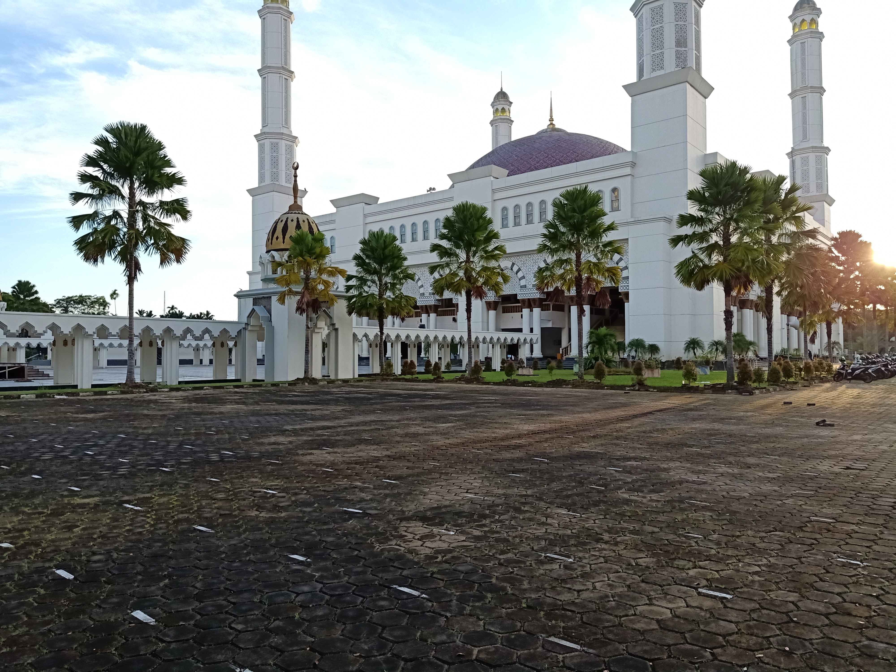
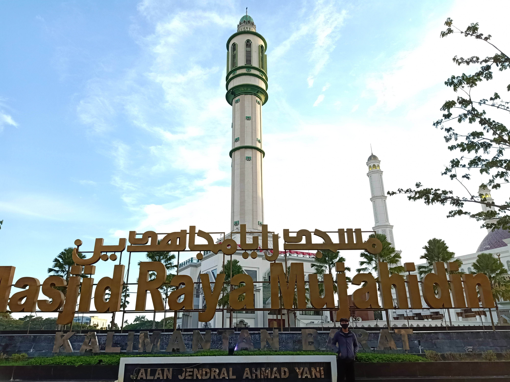

Masjid Raya Mujahidin terletak di Pontianak, Ibukota Provinsi Kalimantan Timur, tepatnya berlokasi di Jln. Ahmad Yani, Kecamatan Pontianak Selatan, Kota Pontianak, Provinsi Kalimantan Barat. Masjid dengan bangunan yang bisa dibilang “Super Megah” ini, kini menjadi salah satu kebanggaan masyarakat Pontianak. Apalagi nama “Mujahidin” dimaksudkan untuk menghargai seluruh perjuangan yang terjadi di Pontianak, mulai dari Perjuangan Kemerdekaan NKRI sampai pada perjuangan penyebaran agama Islam di kota tersebut.
Kota Pontianak merupakan salah satu kota tua yang dimiliki Indonesia, di kota ini juga pernah berdiri sebuah kesultanan islam dengan bukti otentiknya bisa dilihat di Masjid Jami’ Sultan Syarif Abdurrahman, yang merupakan masjid tertua dikota tersebut dan masih berdiri kokoh sampai saat ini.Kesultanan Pontianak juga merupakan salah satu pendukung terbesar dalam perjuangan Kemerdekaan Negara Republik Indonesia. Salah satu tokoh terkenal dari Kesultanan Pontianak yang juga ikut dalam perjuangan kemerdekaan RI, dan juga ikut merumuskan lambang “Garuda Pancasila” sebagai lambang NKRI adalah Sultan Hamid II.
Masjid Raya Mujahidin pertama kali diresmikan pada tanggal 23 Oktober 1978 oleh Mendiang Presiden Soeharto, peresmian tersebut juga bertepatan dengan ulang tahun kota Pontianak ke-207. Kemudian masjid tersebut diperluas pada tahun 2011, selesai dan diresmikan pada tanggal 20 Januari 2015 oleh Presiden Joko Widodo.Masjid Raya Mujahidin memiliki bangunan dengan total luas 4 hektar, dapat menampung sedikitnya 9.000 jamaah sekaligus.
Masjid Raya Mujahidin mengadopsi berbagai macam arsitektur seni bina bangunan Islam, berbagai peradaban Islam di Timur Tengah, serta beberapa ornamen khas Pontianak. Bangunan masjid dibagi menjadi 2 tingkat, yaitu Ruang Sholat Utama terletak di lantai 2, sedangkan lantai dasar / lantai 1 digunakan sebagai tempat untuk menampung aktivitas pendukung. Dari Area Plaza yang biasanya digunakan sebagai area tambahan untuk tempat sholat, terdapat sebuah tangga besar yang menghubungkan langsung pada lantai 2 / Ruang Sholat Utama.Masjid ini memiliki satu kubah besar berwarna keemasan di bangunan masjid utamanya. Dengan desain Mozaik khas kalimantan yang menghiasi kubah dengan motif-motif yang memukau membuat masjid ini semakin terlihat megah. Kemudian dibagian ujung kubah terdapat ornamen sederhana yang meruncing untuk melambangkan tegaknya pendirian islam layaknya huruf alif.
Kemudian ditambah dengan empat menara di seluruh penjuru masjid yang menjulang tinggi, dengan ujung menara di letakkan sebuah kubah kecil yang juga berwarna keemasan dan dihiasi mozaik khas Kalimantan. Bangunan Masjid Mujahidin Kota Pontianak ini seakan ingin mengingatkan kita pada bangunan masjid khas Emperium Usmaniyah, yaitu masjid dengan kubah besar, serta menara-menara yang seakan-akan ingin menusuk langit.Disekeliling bangunan utama masjid terdapat puluan pilar-pilar yang tinggi dan besar, serta lengkungan-lengkungan yang membuat areal masjid semakin megah. Ditambah dengan interior-interior masjid yang sangat kental dengan budaya Kalimantan, berbalut warna keemasan dengan mozaik-mozaik yang khas. Pembangunan masjid ini sangat jeli, apalagi harus memadukan berbagai macam arsitek bangunan mulai dari adopsi Masjid Cordova dan Istana Alhamdra, sampai adopsi dari Masjidil Haram dan juga Masjid Nabawi.